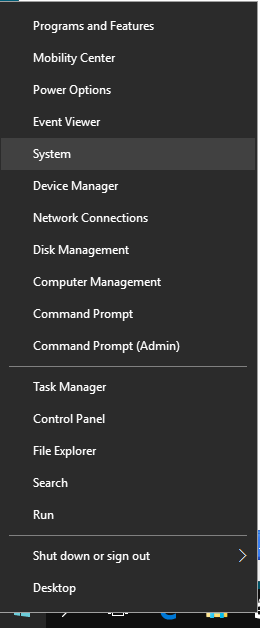
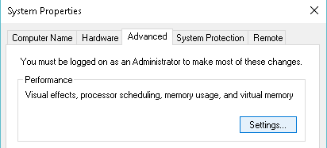
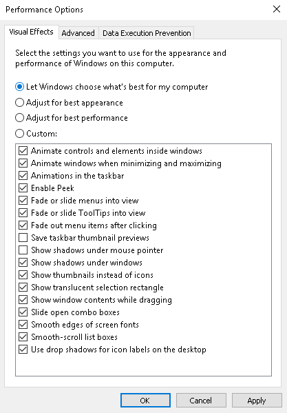
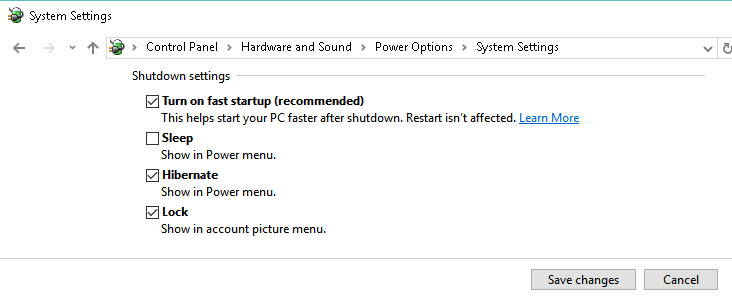
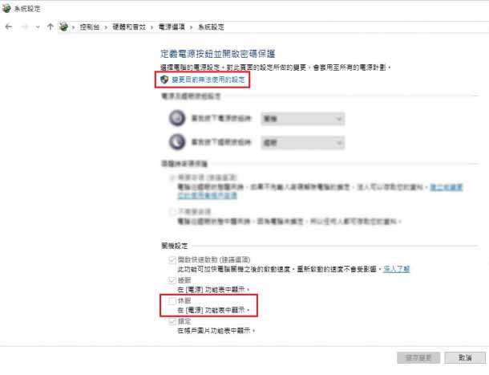
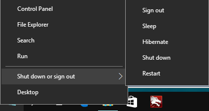
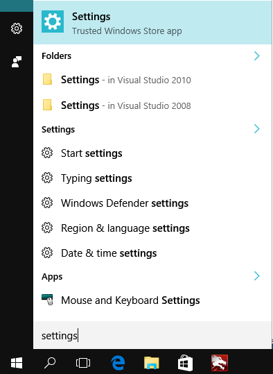
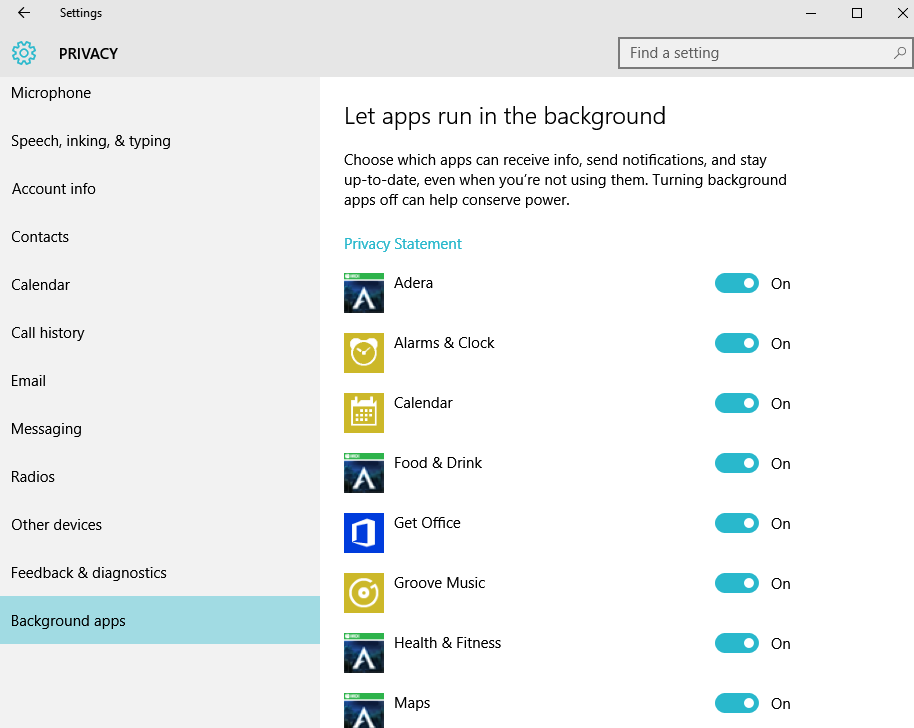

Windows 10 真是超級無敵慢，明明電腦配備比以前強力好幾倍，但是你只要升級 win 10 ，整個作業系統就會被它拖慢。
這裡介紹幾個方式來加快 windows 速度，不用安裝任何軟體，安心不怕中毒。
啟用效能優先設定
先在 windows 左下角點擊右鍵，你就會看到像下圖的選單，請選擇 "System" ，中文版會是顯示 "系統"，點下這個選單。
▼ 接著 windows 會打開系統設定小視窗，如下圖所示，我們再點擊左邊選單的 "Advanced system settings" ，中文版會是 "進階系統設定"。

Windows 又會打開另一個小視窗，我們要選擇上方的選單的 "Advanced"，中文版會是 "進階"，如果預設就是這個選單就不用重覆點擊了，接著你會看到 Performance(效能) ，點擊這個區塊的 "settings(設定)" 按鈕。

最後你會看到如下圖所示，這裡有一堆 windows 的圖形效果，預設大部分是打開的，這些效果會讓 windows 看起來很炫，但是也很吃資源，所以我們選擇 "Adjuct for best performance (效能最佳化)"，選好後所有打勾的選單都會被取消掉，儲存!! 你就會發現系統變快囉。
啟用冬眠/休眠 (Hibernate)
Hibernate 是一個比 sleep 還要好用的功能，一般來說 sleep 只會將螢幕關掉，而整台電腦還在運作當中，這個情形代表電腦是需要吃電的，電源線要一直插著才行，Hibernate 則不然，Hibernate 會讓整台電腦進入冬眠狀態，完全不用吃電，就算我把電源線拔掉也沒關系，下次再開機時，電腦就會從冬眠狀態甦醒，回到上次你工作的畫面，包含你所有開啟中的軟體，而且這個甦醒的動作比 Windows 正常開關快多了，開機再也不用等這麼久了。
現在教你如果打開冬眠功能，首先在 windows 左下角點擊右鍵，再依序選擇 Control Panel -> Hardware and Sound -> Power Options -> System Settings，中文版的話會是 "控制台" -> "硬體與音效" -> "電源選項" -> "系統設定"，看到下圖這個視窗後，點擊"變更目前無法做用的設定"，再將捲軸滾到最下方，將 Hibernate (冬眠) 打勾。
▼ 中文版擷圖
設定成功後，你關機選項旁邊就會出現冬眠的選項，點擊它就可以讓你的電腦進入無能源秏損的冬眠模式囉。
關閉 APP 背景執行
Windows 預設竟然讓一堆 APP 可以在背景執行，所謂的背景執行就是電腦同意這些 APP 可以偷偷摸摸的運作，而不讓 User 知道，最可惡的是我根本就沒有在 Win 10 上裝過任何 APP ，它卻內建一堆垃圾。
取消這些 APP 的背景執行功能吧，先從左下角的搜尋，輸入 "settings(設定)"，再點擊設定選單。
再選 Privacy (隱私)， 接著選 Background APPs (背景 APP)，然後你就會看到一堆沒用的 APP，什麼 Skype, twitter, Adera 我一個也沒有用，把它們全部取消吧，不要浪費我的電腦能源了。
